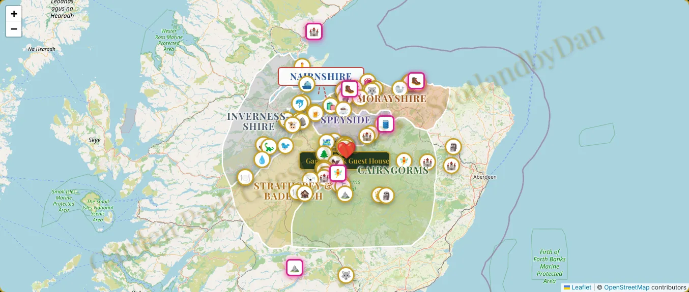

ReferenzErklärvideo
50 Ausflugsziele auf einer Karte.In einer Minute erklärt.
Für Daniel und Sarah Muccio vom Garden Park Guest House und vom Butterfly Cottage in Grantown-on-Spey, mitten in den schottischen Highlands.
- Kunde
- Daniel & Sarah Muccio
- Ort
- Grantown-on-Spey, Schottland
- Leistung
- Erklärvideo
- Online
- Zur Karte ↗

-
01Herausforderung.
Die Karte kann viel. Über 50 Ziele rund um Grantown-on-Spey, von Whisky-Brennereien über Burgen bis zu Stränden und Regentag-Tipps. Dazu Filter nach Kategorie, ein Planer für Tagesausflüge mit bis zu drei Zielen und sechs Sprachen.
Genau das war die Schwierigkeit: Wer zum ersten Mal auf die Seite kommt, sieht viele Punkte und weiss nicht, wo anfangen. Gäste des Garden Park und Besucher der Region sollten schnell verstehen, was die Karte kann, wofür sie sie brauchen und wie sie funktioniert.
-
02Lösung.
Zuerst haben wir zusammengesessen. In Gesprächen mit Daniel und Sarah haben wir festgelegt, wen das Video erreichen soll, welche Punkte hineingehören und welche nicht. Das Ziel: modern, kompakt und auf den Punkt.
- Die Regionen rund um Grantown-on-Spey auf einen Blick
- Kategorien als Einstieg: Natur, Burgen, Küste und mehr
- Die Bedienung in wenigen Schritten gezeigt, nicht erklärt
-
03Ergebnis.
48 Sekunden auf Deutsch. Das Video zeigt kompakt, was die Karte ist, was sie kann und wie man sie bedient. Es läuft direkt auf der Seite der Karte unter «How the map works».
Daniel und Sarah waren sehr zufrieden. Ihre Gäste finden sich jetzt schneller zurecht und planen ihre Ausflüge selbst.
Entwurf: Der letzte Satz ist eine Annahme, bitte bestätigen oder streichen.